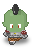
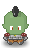
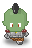

Spaß mit P5.js: Running Orcs
Heute wollte ich nicht nur Spaß mit P5.js, dem JavaScript-Ableger von Processing (Java), haben, sondern auch mit dem kürzlich von mir neu entdeckten Editor Phoenix Code und mit Neocities, dem freundlichen Hoster für meine Flucht ins IndieWeb. Also habe ich erst einmal eine Horde Orks über den Bildschirm wuseln lassen:
Dafür habe ich eine Klasse Orc angelegt und ihr eine eigene Datei orc.js spendiert (Ordnung muss ein):
class Orc {
constructor(_x, _y) {
this.x = _x;
this.y = _y;
this.dy = random(1, 3);
this.w = 32; // width
this.h = 48; // height
this.img = orc2;
}
update() {
this.y += this.dy;
if (this.y >= height + this.h) {
this.y = random(-max_orc*this.h, -this.h);
this.x = random(this.w, width - this.w);
this.dy = random(1, 3);
}
if (frameCount % 4 == 1) {
this.img = orc1;
} else if (frameCount % 4 == 3) {
this.img = orc3;
} else {
this.img = orc2;
}
}
display() {
image(this.img, this.x, this.y);
}
}Sie macht eigentlich nichts anderes, als daß sie die Orks von ihrer Startposition mit der Geschwindigkeit dy nach unten bewegt. Wenn sie den unteren Bildschirmrand erreicht haben, werden sie an eine zufällige Position oberhalb des Bildschirms befördert und auch die Geschwindigkeit wird per Zufallszahlengenerator neu gesetzt:
if (this.y >= height + this.h) {
this.y = random(-max_orc*this.h, -this.h);
this.x = random(this.w, width - this.w);
this.dy = random(1, 3);Für jeden Ork existieren drei Bildchen: orc1.png, orc2.png und orc3.png (linkes Bein unten, beide Beine unten, rechts Bein unten):



Sie werden in Abhängigkeit von der frameRate() abwechelnd aufgerufen, wobei das Bild orc2.png mit den beiden Beinen unten, immer zwischen den anderen beiden Bildern (also doppelt so häufig) aufgerufen wird:
if (frameCount % 4 == 1) {
this.img = orc1;
} else if (frameCount % 4 == 3) {
this.img = orc3;
} else {
this.img = orc2;
} Dadurch entsteht der Eindruck einer wuseligen Bewegung. Für die Bestimmung der Geschwindigkeit habe ich es mir einfach gemacht, sie wird durch die frameRate() geregelt (wie man im Hauptsketch unten sehen kann). Das Beispiel oben in der Seite läuft mit frameRate(18) als Reminiszenz an die frühen Kinojahre (das ist noch ein relativ gemächliches Wuseln), mit einer frameRate(30) wuseln die Orks nicht mehr, sondern sie rennen und mit einer frameRate(60) fliegen die Beine förmlich.
Hier ist also das Hauptprogramm sketch.js (es ist durch die Auslagerung der Klasse Orc recht kurz geraten):
let bg;
let orc1, orc2, orc3;
let my_orc = [];
let max_orc = 20;
async function setup() {
canvas = createCanvas(640, 320);
canvas.parent("myCanvas");
bg = await loadImage("assets/field.png");
orc1 = await loadImage("assets/orc1.png");
orc2 = await loadImage("assets/orc2.png");
orc3 = await loadImage("assets/orc3.png");
for (let i = 0; i < max_orc; i++) {
my_orc[i] = new Orc(random(32, width - 32), -i*48);
}
frameRate(18);
}
function draw() {
background("green");
image(bg, 0, 0);
for (let i = 0; i < max_orc; i++) {
my_orc[i].update();
my_orc[i].display();
}
}Es ist mein erster Versuch mit der neuen async …… await-Funktion von P5.js 2.x, die eine separate preload()-Funktion überflüssig macht. Und damit der Sketch sowohl auf diesen Seiten (dazu unten mehr) wie auch auf Neocities in eine HTML-Datei direkt eingebunden werden kann, wurde der Canvas an eine Variable gebunden und dieser Variablen ein parent im DOM zugewiesen:
Ansonsten werden im setup() die einzelnen Bilder geladen und in einer Schleife in einem Array die gewünschten Instanzen der Klasse Orc erzeugt (auch sie bekommen eine zufällige Position oberhalb des Canvas zugewiesen):
In draw() wird dann nur noch mit dem Hintergrundbild der ganze Canvas gefüllt (es hat »zufällig« die gleiche Größe wie der Canvas 🤓) und dann wieder in einer Schleife für update() und display() die einzelnen Instanzen der Klasse Orc aufgerufen:
Die Bilder der Orks wie auch das Hintergrundbild stammen aus der Werkstatt von Silveira Neto, der sie unter einer Creativ-Commons-Lizenz (CC-BY-SA-4.0) auf GitHub veröffentlicht hat.
Und was das Einbinden des Sketches in diese Seiten angeht, ich habe mich daran erinnert, daß ich das vor etlichen Jahren (im Mai 2023) schon einmal gelöst hatte: Ich habe erst einmal ein Verzeichnis js als Unterverzeichnis der aktuellen Datei an- und in diese die Datei p5.min.js abgelegt, während im gleichen Verzeichnis wie die aktuelle Datei auch die Datei sketch.js liegt. Dies spiegelt die vertraute Struktur wieder, wie sie auch im P5 Web Editor oder bei p5.vscode zu finden ist. Im YAML-Header meiner Seite habe ich dann
include-in-header:
- text: <script src="./js/p5.min.js"></script>
include-before-body:
- text: <script src="./sketch.js"></script>
- text: <script src="./orc.js"></script>Quarto (das ist der Static Site Generator (SSG), der hinter diesem Blog Kritzelheft werkelt) mit diesen beiden Dateien verheiratet.
Damit ist hier der Umweg über den P5-Webeditor nicht mehr nötig.
Der Rest ist wie gehabt: Damit die HTML-Seite auch weiß, wohin sie den Sketch verschieben soll, muß an der Stelle ein div angelegt werden, das zum Beispiel auf dieser Seite so aussieht:
Die Klasse if16_9 wurde von mir erstellt und sollte das div eigentlich responsiv machen. Ob das funktioniert, muß ich allerdings noch testen (bei den YouTube-iFrames funktioniert es jedenfalls – dafür habe ich die Klasse eigentlich entwickelt –, aber iFrames sind keine div).
Was Phoenix Code angeht, erfüllt der Editor bisher meine an ihn gestellten Erwartungen bei der Erstellung von HTML-, CSS- und JavaScript-Dateien. Lediglich eine Syntax-Hervorhebung und eine Fehlererkennung für P5.js, wie sie p5.vscode, die oben erwähnte Erweiterung für Visual Studio Code, bietet, vermisse ich ein wenig. Vielleicht fühlt sich jemand berufen, ein ähnliches Plugin für Phoenix Code zu schreiben. Ich wäre sehr dankbar dafür.
Natürlich habe ich die rennenden Orks auch auf meiner Spielwiese bei Neocities veröffentlicht (dafür hatte ich sie eigentlich programmiert). Und wie die Numerierung zeigt, soll es noch viel mehr P5.js-Projekte auf Neocities geben. Schaun wir mal, wie und ob ich diesen Vorsatz umsetzen kann.
Eine Änderung habe ich auch bei meiner Neocities-Implementierung vorgenommen: Das Directory js mit der Datei p5.min.js habe ich doch nach oben – unterhalb von p5projects – verschoben. Damit es nun von allen Projekten gefunden wird, muß die HTML-Datei folgende Zeilen enthalten
und eventuell noch weitere Sketche (wie in diesem Fall orc.js) aufrufen. Bei meiner wachsenden Begeisterung für P5.js fand ich es dann doch ineffizient, für jedes Projekt eine eigene p5.min.js abzulegen.
Zu guter Letzt noch (der Beitrag ist viel länger geworden, als ursprünglich geplant): Den Quellcode und die Assets für dieses Projekt findet Ihr natürlich auch wieder in meinem GitHub-Repositorium. Habt Spaß damit!